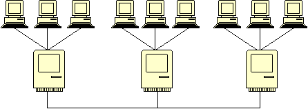
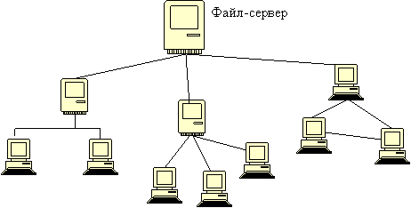
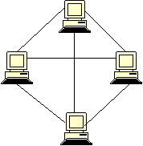
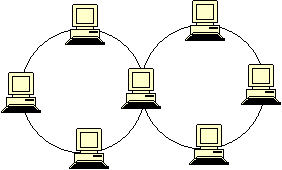

Существует множество других вариантов топологии сетей. Для каждой задачи приходится подбирать индивидуальные решения, которые могут дорого стоить. На основе полученных знаний попробуйте определить плюсы и минусы каждой из следующих цепей.
В данном случае несколько сетей с топологией звезда объединяются при помощи магистральной линейной шины.




Поздравляю Вас с завершением моего маленького курса по топологии сетей. Надеюсь, что у меня получилось вызвать у Вас интерес к сетевым технологиям. Если да, то впереди Вас ждет множество интересных вещей, которые можно изучить разными способами: специализированная литература, университеты, либо сайты таких же любителей IT-технологий, как я. Удачи!